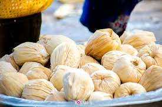

Ghanaian foods would be complete without this savoury side dish. Kelewele is an instant favourite among anyone who tries it, even those who aren’t big fans of peppery food. Usually sold as a snack or side dish all over Accra, it is made by frying soft plantains that have been soaked in a medley of peppers, ginger and garlic. The aroma is crisp and strong, while the pleasant plantain adds some sweetness to the sour.

In the Eastern and Ashanti regions of Ghana, one meal guaranteed to work its wonder is fufu and goat light soup, the proud dish of the Akan. Fufu is a staple food across West Africa but in Ghana, it is made by pounding a mixture of boiled cassava and plantains into a soft sticky paste to go along with aromatic and spicy tomato soup. Fufu can also be found in Northern Ghana, although it is made with yam in this region
Kenkey is one of the principal fermented foods consumed in Ghana. It is prepared from fermented ground white corn (maize). To prepare kenkey, the corn has to be ground first into flour and mixed with warm water, followed by fermentation (for two to three days) into maize dough. The fermented dough is kneaded with the hands until it is thoroughly mixed and slightly stiffened, after which it is divided into two equal parts. One part of the fermented dough is partially cooked in a large pot of water for about ten minutes, stirring constantly and vigorously, after which it is combined with the remaining uncooked dough and mixed well. The cooked half of the dough is called “aflata”. The aflata-dough mixture is divided into serving-sized pieces and wrapped tightly in banana leaves, cornhusks, or foil. The wrapped dough packets are placed on a wire rack above water in a large pot and allowed to boil and steam for one to three hours, depending on their size and thickness. The final product, kenkey is served with a sauce or any fish or meat dish.